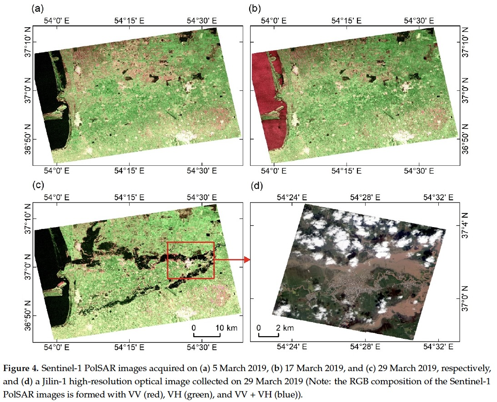

8 Week 8 - Synthetic Aperture Radar (SAR)
8.1 Summary
Although synthetic aperture radar (SAR) was initially introduced in week 1, this week we went into more detail on how SAR operates and how it can be applied in remote sensing. SAR is known to be an active sensor that can observe the Earth through cloudy conditions and can detect during the night, both of which provide textured data, that can offer perspectives that other passive sensors cannot obtain.
SAR is able to emit electromagnetic signals and record how that signal bounces back into the atmosphere. The satellite contains a long RADAR antenna that moves along the azimuth and sweeps the footprint of the Earth’s surface. The longer the antenna, the better the resolution of the images. One of the benefits of SAR is that it is able to record and compile images multiple times (also known as “sweeping and moving”).

Image source: NASA Earthdata. (2024)
8.1.1 Polarisation & Amplitude (backscattering)
In remote sensing, polarisation is the “direction of travel of electromagnetic waves that are transmitted”. There are two orientation types: vertical (up and down) and horizontal (left to right). As indicated in the image below, polarisation is not responded to in the same manner across different surface types as the scattering is often determined by the wavelength. When water bodies are present, it
Rough scattering is most sensitive to VV, as it depends on the topology or surface or the Earth.
Volume scattering bounce across surfaces (such as leaves in trees) and can be received as both VH and HV .
Double bounce scattering is mostly prominent in buildings, but sometime in trees too, which makes these objects sensitive to HH.

Image source: NASA Earthdata. (2024)
SAR signals have both backscatter (amplitude) and phase data. The phase data refers to the “location of the wave in a cycle when it returns to the sensor”. Here VV refers to the surface roughness, while VH refers to the volume of the surface.
8.1.2 InSAR
InSAR or Interferometric Sythetic Aperture Radar is a technique that “combines two or more SAR images” within the same region that can indicate either “surface motion or surface topography”. Applying this sort of method can be very useful in detection of physical changes over time such as earthquake detection, and the interferogram would output the extent of movement that occurs between the two images in a given location.

Image source: NASA NISAR. (2024)
8.2 Applications
SAR detection can be applied in both physical and urban detection within remote sensing. One of the examples from Zhang et al. (2021) where they used Sentinel-1 polarmetric SAR images to detect flooded urban areas across two locations. Additionally, they pre-processed this data to “extract the backscattering coefficients and interferometric coherences” (pg7). Additionally they trained samples for both flooded and unflooded areas and compared the two results.

Image source: Zhang et al. (2021)
Gens (2013) used SAR to detect oceaongraphic changes along the sea floor and he observed rain cells over the ocean. This application is quite different from what we have encountered in the lecture, as it focuses on water body analysis as opposed to land cover types and surfaces. He found that “Apart from wind gust effects on the sea surface, the radar backscatter strongly depends on the frequency and polarization of the radar signal.” (pg 294). His study acknowledged an issue regarding the temporal coverage of SAR when used for oceanogrpahic applications, as the “the difference in wavelength has to be factored in when data from different sources need to be combined in a synergistic analysis” (pg 296). Across both studies, SAR was able to detect changes in areas over time and location, and is able to identify surface types based on the wavelengths. It is clear that SAR is better for urban and physical land changes as opposed to ocean-based detection as there are less issues that are encountered and imagery provides more accurate results.
8.3 Reflection
I really enjoyed this weeks lecture, as we were able to go into more depth than we were originally introduced in the first week. I found that SAR can be broadly applied to various urban and rural areas that can analyse multiple features based on the polarisation and backscattering data that is collected. I find the concept of InSAR particularly interesting and would like to explore that in more detail in my spare time, as it seems like it would serve as a good temporal comparison. I particularly enjoyed learning about the different backscattering that the SAR sensor is able to pick up on, which has proven to be a useful tool in academic research. I would like to use SAR in my future line of work alongside GEE, as I believe it will aid in conducting visual and spatial analysis that is on trend with ongoing research.
8.4 References
Gens (2013) Oceanographic. applications of SAR remote sensing. GIScience & Remote Sensing. 45(3), pg 275-305. [Online] Available via: https://www.tandfonline.com/doi/abs/10.2747/1548-1603.45.3.275
NASA Earthdata (2024) https://www.earthdata.nasa.gov/learn/backgrounders/what-is-sar
NASA NISAR (2024) https://nisar.jpl.nasa.gov/mission/get-to-know-sar/interferometry/
Zhang, H. et al. (2021) An Urban Flooding Index for unsupervised inundated urban area detection using Sentinel-1 polarmetric SAR images.